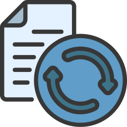

Leonardo V. Rosseti
Sou um entusiasta da tecnologia e operador de computador em constante evolução. Tenho experiência prática com Python, HTML e CSS, desenvolvendo pequenos sistemas e projetos voltados à automação e à web. Gosto de aprender na prática, explorando novas ferramentas e aprimorando minhas habilidades em programação e lógica. Meu objetivo é continuar crescendo na área de desenvolvimento, criando soluções simples, funcionais e eficientes.
Skills
Automação com Pyhton
HTML5
CSS3
Desenvolvimento de sistemas
Manutenção de sistemas
Suporte a usuários
Suporte técnico
Análise de dados
Assistência técnica
Formação
2017
Ensino Médio Completo
Escola Estadual João Palma Guião, Ribeirão Preto
2024
Lógica de Programação
Udemy
2024
Ninja pfSense v2023
Udemy
2024
Segurança em Tecnologia da Informação
Fundação Bradesco
2025
Python 3
Curso em Video
2025
Git e Github
Curso em Video
2025
HTML5 - CSS3
Curso em Video
Projetos
Testador de Mouse
Ferramenta simples que registra cliques e movimentos do mouse para verificar se todos os botões e rolagens estão funcionando corretamente.
Saiba mais...
O Testador de Mouse é um aplicativo desenvolvido para diagnosticar o funcionamento dos botões e da rolagem do mouse. Ele registra em tempo real os cliques esquerdo, direito e do meio, além dos movimentos de scroll, permitindo ao usuário identificar possíveis falhas no dispositivo. O projeto foi criado com foco em simplicidade e praticidade, servindo como uma ferramenta útil para técnicos e usuários que desejam testar rapidamente o estado de seu mouse.
Sorteador de Nomes Integrado ao SharePoint
Aplicativo que realiza sorteios de nomes conectando-se diretamente a uma lista do SharePoint, permitindo escolher quantos nomes serão sorteados.
Saiba mais...
O Sorteador de Nomes Integrado ao SharePoint é uma ferramenta desenvolvida para automatizar sorteios de forma prática e confiável. O aplicativo se conecta diretamente a uma lista do SharePoint, de onde obtém os nomes em tempo real. O usuário define quantos nomes deseja sortear, e o sistema realiza o processo instantaneamente, exibindo os resultados de forma clara e transparente. Ideal para sorteios internos em empresas, eventos ou seleções rápidas, o projeto foi criado com foco em integração e facilidade de uso.

Monitor de Espaço em Disco com Alerta por E-mail
Script em PowerShell que monitora o espaço livre no disco via GLPI e envia alertas automáticos por e-mail e abre um novo ticket no sistema quando o limite configurado é atingido.
Saiba mais...
O Monitor de Espaço em Disco com Alerta por E-mail é um script em PowerShell desenvolvido para automatizar o monitoramento de armazenamento em computadores e servidores.Ele verifica o espaço livre no disco principal (C:) e, caso o valor fique abaixo do limite definido, o sistema envia um e-mail de alerta com informações detalhadas, incluindo nome do computador, usuário e quantidade de espaço restante. Essa automação é ideal para ambientes corporativos, ajudando equipes de TI a prevenir falhas e lentidões causadas por falta de espaço.
Agendador de Respostas Automáticas do Exchange
Ferramenta que agenda e aplica respostas automáticas em todas as contas de e-mail da organização via Exchange, com definição de datas e mensagens personalizadas.
Saiba mais...
O Agendador de Respostas Automáticas do Exchange é uma aplicação desenvolvida para automatizar o gerenciamento de respostas automáticas (Out of Office) em todos os usuários de uma organização. Por meio de uma interface simples, o administrador define as datas de início e término da resposta automática, além do texto personalizado que será exibido. O sistema então aplica automaticamente essas configurações em todas as contas ativas do Exchange, eliminando a necessidade de configurar cada usuário manualmente. Esse projeto foi criado para otimizar tarefas administrativas e garantir consistência nas comunicações durante períodos de recesso, férias ou eventos corporativos.
Gerenciador de Permissões em Pastas Compartilhadas
Script em PowerShell que automatiza a configuração de permissões em pastas compartilhadas, aplicando acessos em lote para usuários e grupos específicos.
Saiba mais...
O Gerenciador de Permissões em Pastas Compartilhadas é um script em PowerShell desenvolvido para automatizar a definição de acessos em diretórios compartilhados de servidores Windows. A ferramenta permite aplicar permissões em lote, definindo de forma rápida e padronizada quais usuários ou grupos terão acesso a determinadas pastas. Isso elimina a necessidade de configurar manualmente cada diretório, reduzindo erros e economizando tempo da equipe de TI. Ideal para ambientes corporativos com grande volume de usuários e departamentos, o projeto reforça a segurança e o controle de acessos de forma centralizada.
Calculadora de Horas para o RH
Aplicativo que calcula o total de horas trabalhadas e o saldo diário/geral, ajudando o RH a controlar jornadas e horas extras com praticidade.
Saiba mais...
A Calculadora de Horas para o RH é uma aplicação web desenvolvida para facilitar o controle de jornada de trabalho de colaboradores. O sistema permite registrar as marcações de entrada, saída e intervalos, calcular automaticamente o total trabalhado, a meta diária e o saldo acumulado. Além disso, o usuário pode exportar os dados em CSV ou PDF, o que torna a ferramenta prática para relatórios e conferências. O projeto foi desenvolvido em HTML, CSS e JavaScript puro, com foco em desempenho e privacidade — nenhuma informação é enviada a servidores externos.

Atualização de Responsáveis - Sistema Acessórias
Este projeto em Python automatiza o processo de atualização de responsáveis pelos departamentos das empresas cadastradas no sistema Acessórias, utilizando automação web com Selenium.
Saiba mais...
Acesse o repositorio online Clique aqui
Pulador Automático de Anúncios do YouTube
Script em JavaScript que detecta automaticamente o botão “Pular Anúncio” no YouTube e o aciona assim que fica disponível, sem bloquear propagandas.
Saiba mais...
O Pulador Automático de Anúncios do YouTube é um script desenvolvido em JavaScript para automatizar o clique no botão “Pular Anúncio” assim que ele aparece nos vídeos da plataforma. Diferente de bloqueadores de anúncios, este projeto não remove os anúncios — ele apenas detecta o botão de pular e executa o clique automaticamente, proporcionando mais praticidade ao usuário sem violar as regras da plataforma. O script foi criado com foco em simplicidade e aprendizado em automação web, utilizando query selectors e temporizadores para monitorar os elementos da página em tempo real.
Sistema de Controle de Estoque de Insumos de TI
Sistema de controle de estoque conectado a banco de dados, criado para registrar entradas, saídas e descartes de insumos de tecnologia.
Saiba mais...
O Sistema de Controle de Estoque de Insumos de TI é uma aplicação desenvolvida para gerenciar o inventário de equipamentos e materiais de tecnologia, oferecendo um controle completo e centralizado. O sistema permite o registro de entradas, saídas, devoluções e descartes, mantendo um histórico detalhado de todos os movimentos no estoque. As informações são salvas em um banco de dados, garantindo persistência e integridade dos dados. Esse projeto foi criado com foco em organização, rastreabilidade e praticidade, facilitando o trabalho do setor de TI no acompanhamento de materiais como cabos, periféricos, peças e acessórios. Tecnologias utilizadas: HTML, CSS, JavaScript e banco de dados SQL